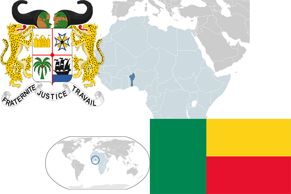

To`liq nomi: Benin Respublikasi
Region: G`arbiy Afrika
Qonunchilik shakli: Respublika
Mustaqillik kuni: 1- avgust 1960 - yil Fransiyadan
Poytaxti: Porto-Novo,Kotonu
Maydoni: 112622 km² (dunyoda 101 -o`rinda )
Chegaradosh davlatlari: Burkina-Faso, Niger, Nigeriya, Togo
Aholisi: 10 741 458 (dunyoda 89 -o`rinda ) 2016 -yil roʻyxat
Aholi zichligi: 79 /km²
Aholining o`rtacha yoshi: 53,45 yil ( 54,6 ayollar, 52,3 erkaklar)
Rasmiy tili: Fransus tili
Pul birligi: Frank
Telefon prefiksi: +229
Internet domen: .bj
Xalqaro tashkilotlarga a`zoligi: BMT (1960 –yildan)
Dengiz va okeanlarga chiqishi: yo`q
YIM: Butun: $ 13,035 mlrd, Jon boshiga: $ 1608 (2008 - yil roʻyxati)
Yirik shaharlari: Kotonu